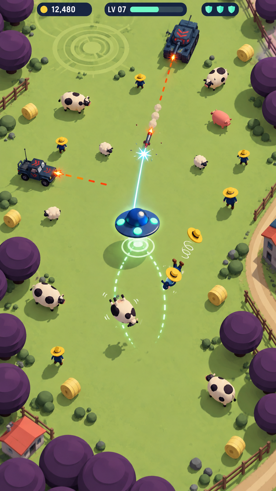
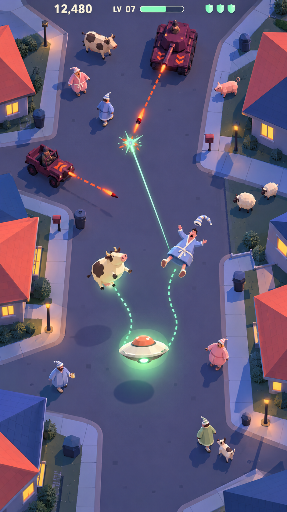
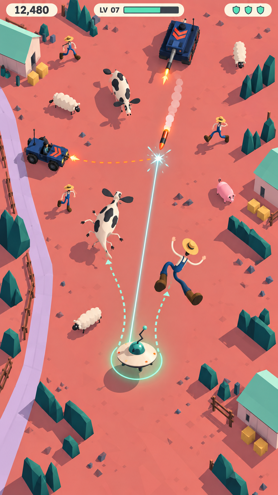
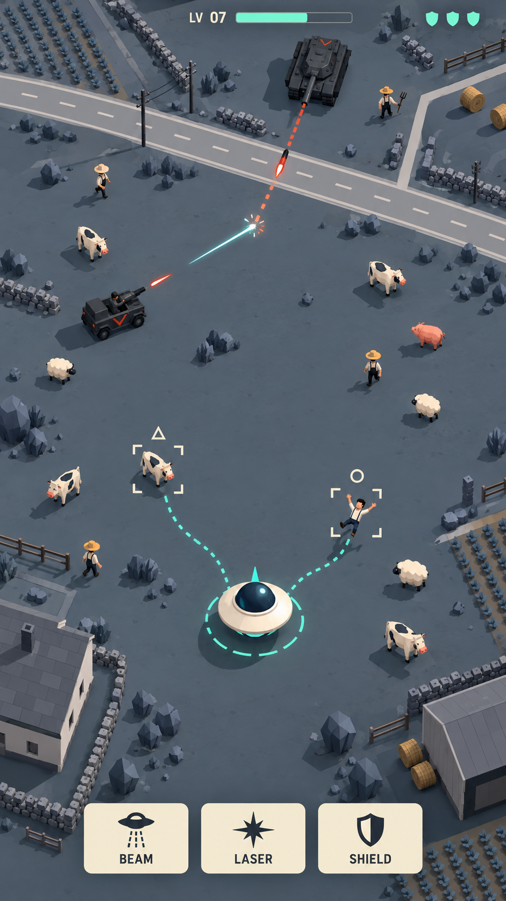
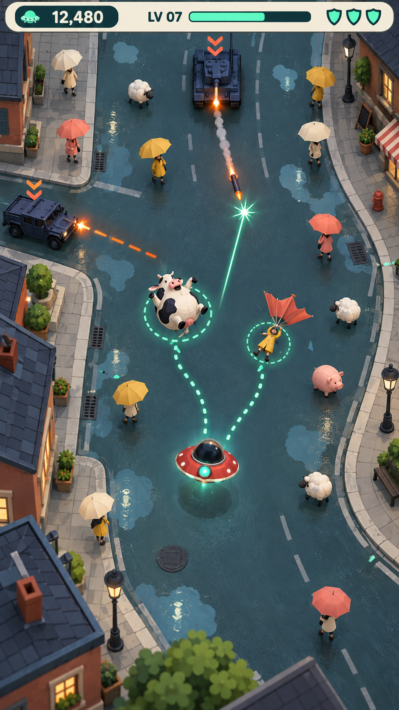
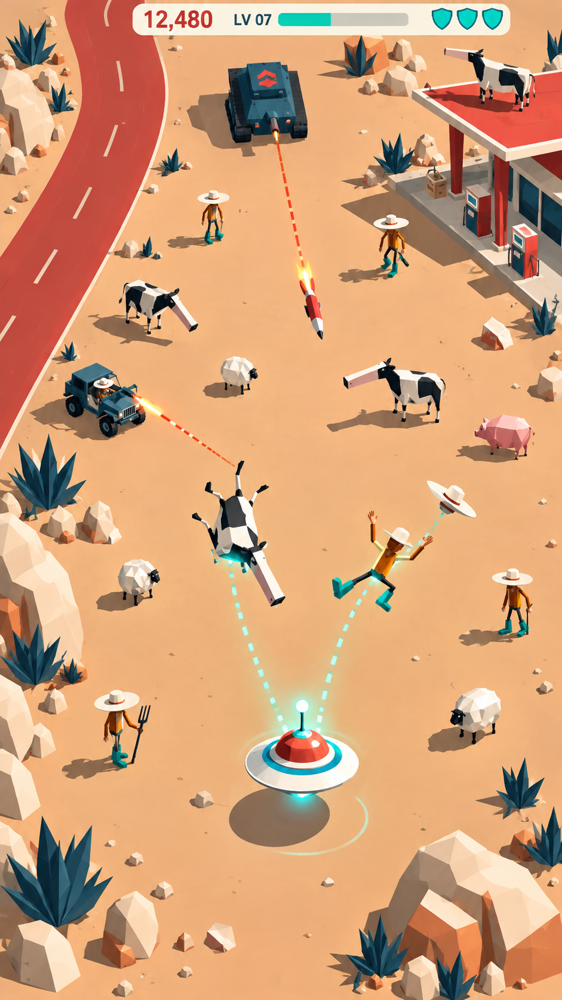
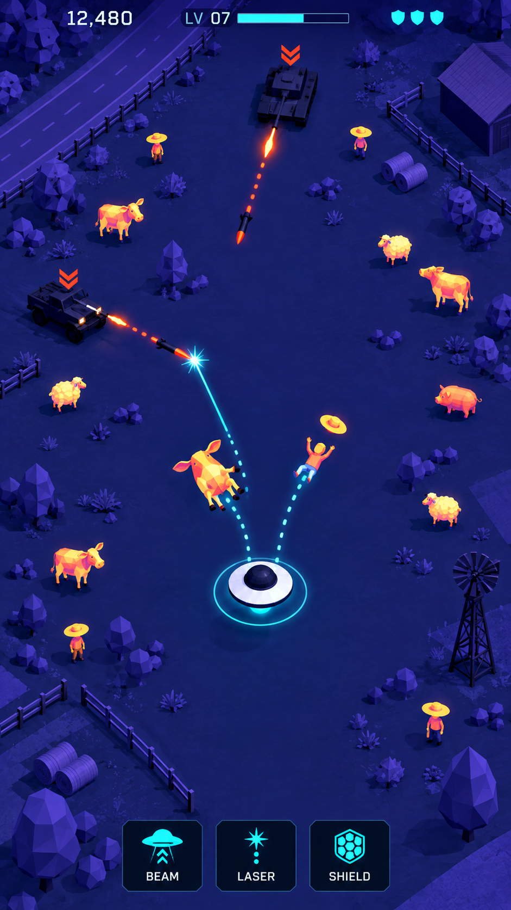
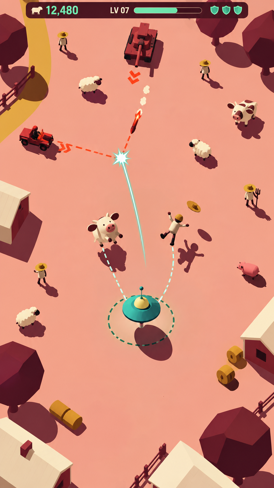
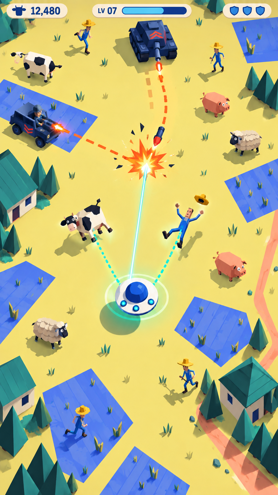
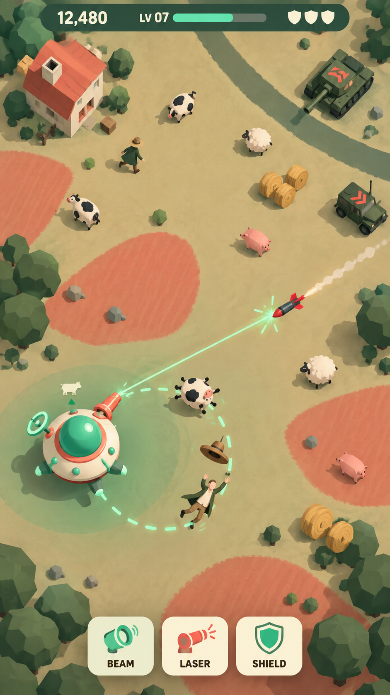

01 Crop Circle Pop
A bright, mischievous invasion with a visual hook that belongs specifically to UFOs: the ship leaves a crisp crop-circle pattern as it harvests.
Rationale and critique
- Appeal
- A bright, mischievous invasion with a visual hook that belongs specifically to UFOs: the ship leaves a crisp crop-circle pattern as it harvests.
- Why it fits the game
- The flattened capture patch separates the active area from uncollected targets. Simple circular canopies, short silhouettes and an open route support fast scanning.
- What makes it different
- The whole shape system grows out of concentric circles: saucer, hats, cow bellies, crop patterns and acquisition rings. It is a coherent UFO identity rather than another toy material.
- How it develops the previous frame
- Start with a clean gameplay state, remove the permanent upgrade tray, reduce decorative farm assets and make capture feedback part of the ground.
- What the generated frame shows
- The frame has a clearer uncluttered playfield and a recognisable crop-circle trace. Its meadow and toy-like cast still feel close to earlier farm directions.
- Trade-off
- Keep decorative crop rings near the edges so they cannot be confused with the live capture radius.
- Production approach
- Reusable low-poly meshes, one matte material atlas, a scrolling terrain atlas and a masked ground decal for flattened crops.
- Next test
- Test the crop-circle stamp in motion and make the active capture radius consistently distinct from old traces.

02 Sleepy Suburbia
A gentle late-night domestic comedy: a bizarre visitor interrupts an otherwise ordinary sleeping neighbourhood.
Rationale and critique
- Appeal
- A gentle late-night domestic comedy: a bizarre visitor interrupts an otherwise ordinary sleeping neighbourhood.
- Why it fits the game
- Quiet dark streets leave room for the saucer and targets to read. Warm window rectangles establish houses without demanding detailed environment models.
- What makes it different
- Bathrobe silhouettes, slippers, small home gardens and an incongruous cow shift the identity away from another farm-toy landscape.
- How it develops the previous frame
- Retains the first frame's uncluttered playfield and clean HUD, but changes the world, character wardrobe, lighting and comic situation.
- What the generated frame shows
- The bathrobe cast and neighbourhood make the comic situation immediate. The muted road gives targets good separation, though actors are larger than the intended production scale.
- Trade-off
- Night colours need testing on a dim phone; only the background should become subdued, never the collectible silhouettes or missiles.
- Production approach
- Short modular street segments, a small set of roof planes, reusable civilian bodies with robe/hat variations, baked-looking lighting plus local effects.
- Next test
- Test a smaller target scale and denser military pressure without losing the quiet domestic mood.

03 Elastic Stampede
The abduction itself is the joke: otherwise solid characters stretch into absurd, readable poses before popping into the ship.
Rationale and critique
- Appeal
- The abduction itself is the joke: otherwise solid characters stretch into absurd, readable poses before popping into the ship.
- Why it fits the game
- A simple stretch-and-recoil motion can mark capture progress while a stationary circle shows range. The terrain stays quiet during the busiest action.
- What makes it different
- Rigid angular scenery contrasts with long, elastic animal and human silhouettes. The idea is an animation language, not a new surface finish.
- How it develops the previous frame
- Builds on frame 2's situational humour by making the recurring player action funny even without the setting.
- What the generated frame shows
- The long farmer limbs and tapered cattle are visibly different from the earlier round toy cast. The capture pose is expressive, but its long trails occupy a lot of screen space.
- Trade-off
- The stretch must leave the animal recognisable and must not hide incoming missiles. A still frame cannot establish how satisfying the motion feels.
- Production approach
- A handful of low-poly skinned characters or controlled mesh deformation, simple stretched capture poses, rigid modular props and a restrained unlit/cel shader.
- Next test
- Prototype a short stretch/pop animation and shorten the trails; check that cows remain recognisable during deformation.

04 Alien Field Guide
Dry, curious alien science: collecting a cow is treated with the seriousness of cataloguing a rare specimen.
Rationale and critique
- Appeal
- Dry, curious alien science: collecting a cow is treated with the seriousness of cataloguing a rare specimen.
- Why it fits the game
- Small brackets identify the two active capture targets, a segmented ring shows progress, and the rest of the scene stays visually subdued.
- What makes it different
- Warm organic specimens sit inside a cool technical model of Earth. The identity comes from an alien observer's visual language rather than the toys' material.
- How it develops the previous frame
- Carries forward the stronger actor silhouettes from frame 3 while using controlled colour and interface marks to reduce action clutter.
- What the generated frame shows
- The muted scenery and warm specimens establish a clear collection hierarchy. Brackets help identify captures, but the generated HUD omits the score and the overall mood is reserved.
- Trade-off
- Too many brackets and numbers could turn a playful game into a dashboard. Limit annotation to the active targets.
- Production approach
- Simple flat-shaded meshes, one subtle outline pass, a few reusable UI brackets and ring graphics, muted modular terrain.
- Next test
- Restore the score in the production HUD, test more character warmth, and keep brackets limited to two active targets.

05 Umbrella Panic
A warm, slapstick street scene: umbrellas tip inside-out and belongings float away when the saucer passes.
Rationale and critique
- Appeal
- A warm, slapstick street scene: umbrellas tip inside-out and belongings float away when the saucer passes.
- Why it fits the game
- Broad umbrella shapes make civilians readable from overhead. Empty road sections provide the runner's route, with props and buildings kept at the sides.
- What makes it different
- Rainwear, umbrella silhouettes, simple puddles and an ordinary town disrupted by stray livestock give it a different cast and spatial rhythm.
- How it develops the previous frame
- Retains frame 4's selective target emphasis but restores character warmth and uses everyday objects as comic animation props.
- What the generated frame shows
- Umbrellas produce a strong overhead shape language and a specific capture gag. The frame gained more pavement and building detail than intended.
- Trade-off
- Glossy puddles and multiple bright umbrellas could compete with warning effects. Keep reflections simple and use threat chevrons as well as colour.
- Production approach
- Modular streets, roof-only buildings, umbrella/civilian variants, a flat puddle mask and short looping rain accents; no costly realistic reflections are required.
- Next test
- Reduce pavement texture and props, preserve the umbrella gag, and test simple puddle reflections rather than realistic rendering.

06 Roadside Oddities
A sun-baked roadside comedy with lanky locals, improbable livestock and exuberant miniature architecture.
Rationale and critique
- Appeal
- A sun-baked roadside comedy with lanky locals, improbable livestock and exuberant miniature architecture.
- Why it fits the game
- Broad empty sand and a single road curve give the runner clean space. A few memorable landmarks could differentiate chunks without filling them with props.
- What makes it different
- Exaggerated wedge silhouettes, roadside architecture and a tightly limited desert palette create a specific place beyond the generic barn-and-paddock set.
- How it develops the previous frame
- Keeps the situational character of frame 5 but replaces detailed streets with large quiet shapes and a more economical environment kit.
- What the generated frame shows
- The exaggerated snouts, hats and boots give the cast a specific identity. Broad sand keeps the action open; the roadside landmark could be reduced further.
- Trade-off
- A novelty landmark should stay at the edge and remain an obstacle, not steal attention from the UFO or suggest a different core game.
- Production approach
- A small set of exaggerated buildings, flat terrain patches, stylised cow/human meshes and a single directional light; detail comes from silhouette rather than texture.
- Next test
- Keep landmark detail at the edge and test the animal shapes at a smaller on-phone scale.

07 Thermal Mischief
The player sees Earth through a strange alien sense, with warm little creatures standing out against a cold miniature world.
Rationale and critique
- Appeal
- The player sees Earth through a strange alien sense, with warm little creatures standing out against a cold miniature world.
- Why it fits the game
- The target class has a strong value hierarchy; angular military silhouettes and distinct warning glyphs separate threats from living collectibles.
- What makes it different
- It uses solid low-poly volumes with a false-colour shader, rather than a neon material swap or wireframe radar aesthetic.
- How it develops the previous frame
- Takes frame 6's silhouette economy further by controlling the entire world's information hierarchy through one consistent alien viewing rule.
- What the generated frame shows
- Living targets separate strongly from the cold ground. Enemy bodies become dark, so the large warning chevrons carry much of their visibility.
- Trade-off
- The palette must not imply that every warm object is safe. Threat shapes, symbols and projectile silhouettes need to carry meaning without colour.
- Production approach
- The same small low-poly asset set with flat false-colour material assignments or a stylised ramp shader; no real thermal simulation is needed.
- Next test
- Test a brighter edge value on military vehicles and non-colour threat cues on a dim display.

08 Shadow Play
A sunny, graphic world where small awkward creatures cast wonderfully exaggerated silhouettes.
Rationale and critique
- Appeal
- A sunny, graphic world where small awkward creatures cast wonderfully exaggerated silhouettes.
- Why it fits the game
- The actors remain simple and the ground remains calm. Stable directional shadows can convey height during abduction without adding particle effects.
- What makes it different
- Its identity is a relationship between small low-poly forms and deliberately stylised shadow graphics, rather than texture or a special material.
- How it develops the previous frame
- Responds to frame 7's dark-background dependency with a bright palette and shape-based emphasis that can be read without luminous shaders.
- What the generated frame shows
- The small set of colours and broad shadows create a cohesive graphic result. The lift shadows are legible, but other shadows could be mistaken for interactive shapes.
- Trade-off
- Shadows must remain non-colliding visual cues and should not overlap active threat markers. Target silhouettes need to be readable without their shadows.
- Production approach
- Simple low-poly meshes, a fixed directional light and controlled stylised shadows or projected shadow sprites; no complex material system.
- Next test
- Shorten scenery shadows and verify that actor footprints, capture range and projectiles remain distinct.

09 Crooked County
Everything on Earth seems awkwardly assembled: crooked hats, lopsided cows and vehicles that look one wobble away from losing a wheel.
Rationale and critique
- Appeal
- Everything on Earth seems awkwardly assembled: crooked hats, lopsided cows and vehicles that look one wobble away from losing a wheel.
- Why it fits the game
- Asymmetric silhouettes could make small actors identifiable while a clean, consistent camera keeps their collision footprints understandable.
- What makes it different
- Earth is built from skewed wedges and off-centre details; the alien saucer is the only perfectly round, precise object. The visual contrast belongs to the invasion.
- How it develops the previous frame
- Keeps frame 8's limited palette and simple rendering while shifting personality out of large shadows and into reusable model silhouettes.
- What the generated frame shows
- The long figures and angular palette have character, but the generated models are less asymmetric than intended and the interception burst is too dominant.
- Trade-off
- Crooked forms still need clear bounds and recognisable species; visual eccentricity should not imply unpredictable hitboxes.
- Production approach
- A small low-poly mesh library with intentionally skewed proportions, one flat material palette, short shadows and a tiny shared expression atlas.
- Next test
- Push a few model silhouettes further off-centre, simplify the burst and preserve predictable collision bounds.

10 The Great Vacuum
The UFO itself becomes the comic star: an increasingly over-equipped flying vacuum collecting a small procession of bewildered Earth creatures.
Rationale and critique
- Appeal
- The UFO itself becomes the comic star: an increasingly over-equipped flying vacuum collecting a small procession of bewildered Earth creatures.
- Why it fits the game
- An orderly, short capture spiral communicates absorption without a large beam cone. Visible ship attachments can make level-up progress tangible during play.
- What makes it different
- The identity is a specific player-machine silhouette and a repeatable capture choreography, bringing the abduction and upgrade systems into the artwork.
- How it develops the previous frame
- Combines the earlier frames' quiet terrain, distinctive silhouettes and restrained threat marks, while moving the focus away from large interception bursts and toward the growing player ship.
- What the generated frame shows
- The asymmetric composition, modular saucer and short capture orbit are the clearest break from the repeated V-shaped capture layout. The generated UFO is larger than planned.
- Trade-off
- Attachments and orbiting captures can hide the player footprint. Keep the base circle and forward heading clear, and cap simultaneous capture silhouettes.
- Production approach
- A small base saucer plus modular attachment meshes, a simple two-slot capture animation, flat matte environment models and one short readable effect per action.
- Next test
- Reduce the complete ship footprint, cap visible captures at two, and test whether attachments communicate upgrades at normal play zoom.